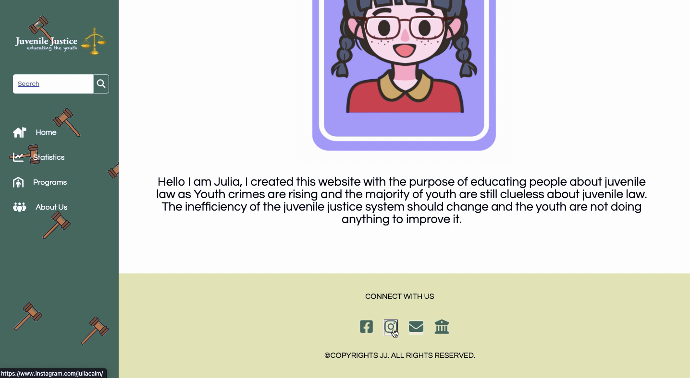
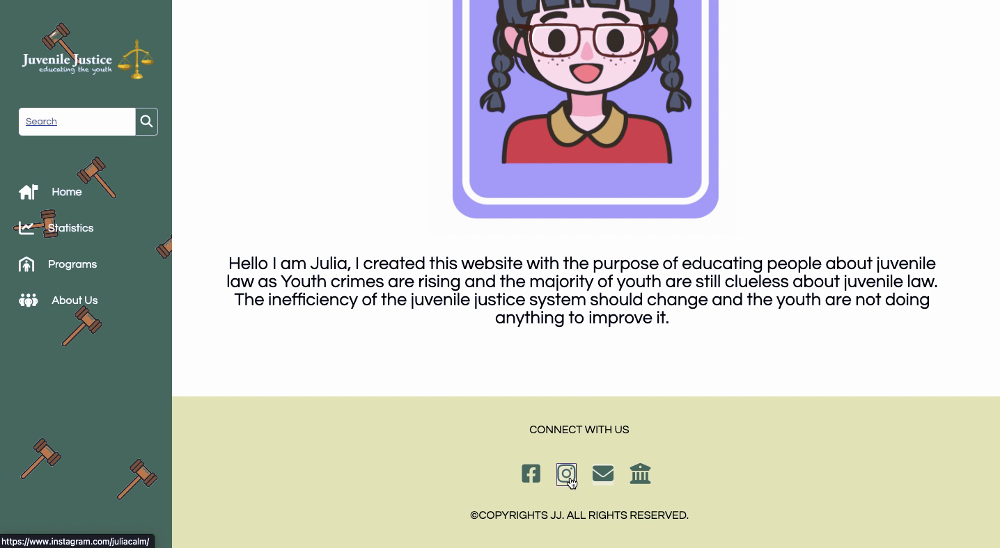

Juvenile Justice Website — Case Study
A content-driven site to help young people and families navigate youth justice processes and resources.
HTML/CSS/JS Accessibility Responsive Content Strategy
Back to Portfolio Website Video
Problem
Information on youth justice can be confusing or scattered. Families and rangatahi often struggle to find clear, up-to-date guidance in one place.
Solution
A central, mobile-first website with plain-language explanations, process overviews, contact points, and downloadable resources.
My Role
- Frontend development & site structure
- Content layout & component design
- Accessibility & performance tuning
Tech & Approach
Static HTML/CSS/JavaScript; responsive grid; semantic HTML; lighthouse checks; basic analytics.
Screenshots


 

Outcomes
- Improved readability and navigation for key user groups.
- Faster page loads via optimized images and clean CSS.
- Clear calls to action for support services.
Learnings
Balancing clarity and completeness; writing accessible content; structuring information for quick scanning on mobile.